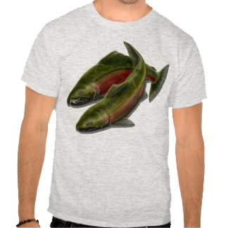
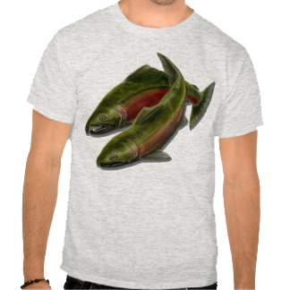

OUR PRODUCTS


 

Have Fun With Our Cookies:
Step 1
Beat butter and shortening with an electric mixer on medium
to high speed for 30 seconds. Add sugar, baking powder,
and salt; beat until combined. Beat in egg, 1 tablespoon milk,
and vanilla. Beat in as much of the flour as you can with the mixer.
Stir in remaining flour with a wooden spoon.
Divide dough in half.
If necessary, cover and chill dough for 3 hours or until easy to handle.
Step 2
Roll each portion dough on a lightly floured surface until 1/4 inch thick.
cut with a fish-shape cutter. Place cutouts 1 inch apart on cookie sheets lined with foil.
Step 3
Use aspic cutters or a sharp knife to cut decorative designs in the dough.
Fill cutouts with crushed hard candies.
Step 4
Bake in a 375 degree F oven for 8 to 9 minutes or until edges are set.
Cool cookies completely on foil on wire racks. When cool, peel foil off cookies.